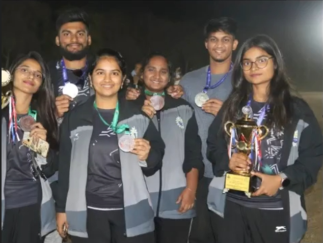

Powerlifting: Bar Goes Up or I Do
Powerlifting is not safe. It is not comfortable. It is a do-or-die moment. When the bar is loaded, there are only two outcomes: either the bar goes up, or you go down trying.
Built Under Pressure
This sport has no mercy. Ankles have folded. Knees have failed. Careers have ended under a single bad rep.
Every heavy session teaches the same lesson: your body adapts slower than your ego.
Powerlifting doesn't reward fear — it exposes it.

The Mental Cost of Heavy Weight
The hardest part of powerlifting is not the weight. It is stepping toward the bar knowing exactly what it can take from you.
Heavy attempts live in your head. Sleep gets lighter. Focus sharpens. Every rep becomes a negotiation with risk.

First National-Level Reality Check
The ALL INDIA INTER IIIT SPORTS MEET at IIITDM Kancheepuram stripped illusions away. I totaled 435 kg and earned a Bronze Medal.
Everyone was strong. What separated results was judgment under fatigue.

When the Stakes Got Higher
By 2025, the weight carried expectations — not just from others, but from myself.
Training became quieter. Fewer words. More intent.
I totaled 490 kg and secured a Silver Medal.
Owning the Platform
Over four years, I progressed from 420 kg to 520 kg, setting the highest total in college history.
Dominance came from repetition, recovery, and restraint.
- Bench Press: 120 kg
- Squat: 180 kg
- Deadlift: 220 kg

Building Champions Beyond Myself
The most unexpected chapter came not from my own lifts, but from the athletes trained under my guidance. 
A group of female lifters — trained personally — stepped into powerlifting with no expectations placed on them.
- 1 Gold Medal
- 3 Silver Medals
- 2 Bronze Medals
- 3 Trophies from powerlifting alone
These results were never predicted. Not across sports. Not from the female category.
What they proved is simple: strength responds to preparation — not stereotypes.
Discipline Over Motivation
Motivation fades. Discipline remains.
Powerlifting rewards those who respect process over hype.
Final Rep
Powerlifting does not promise longevity. It promises honesty.
The platform remembers. The numbers stay. And the lessons extend beyond the bar.